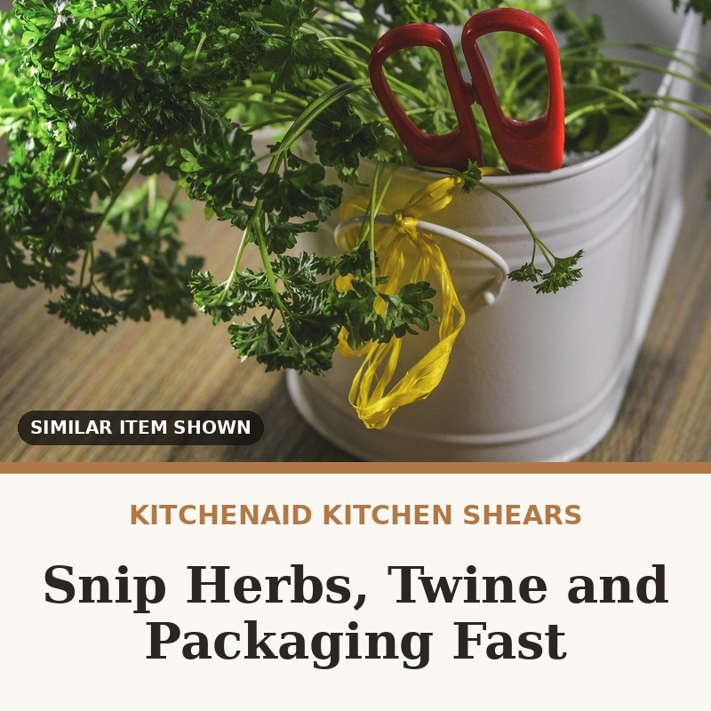

KitchenAid All Purpose Kitchen Shears with Sheath
A knife and cutting board is a lot of setup for snipping herbs, trimming twine or opening a stubborn package. These stainless steel shears have micro-serrated edges that grip food, a soft-grip handle, and a sheath so they can live safely in a drawer.
Check price on Amazon → Paid link · we may earn a commission